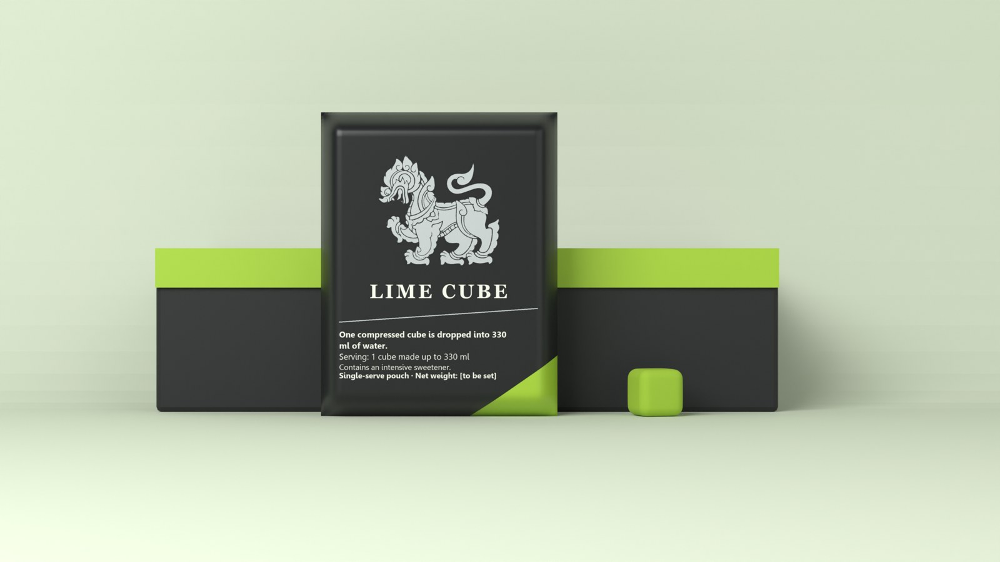
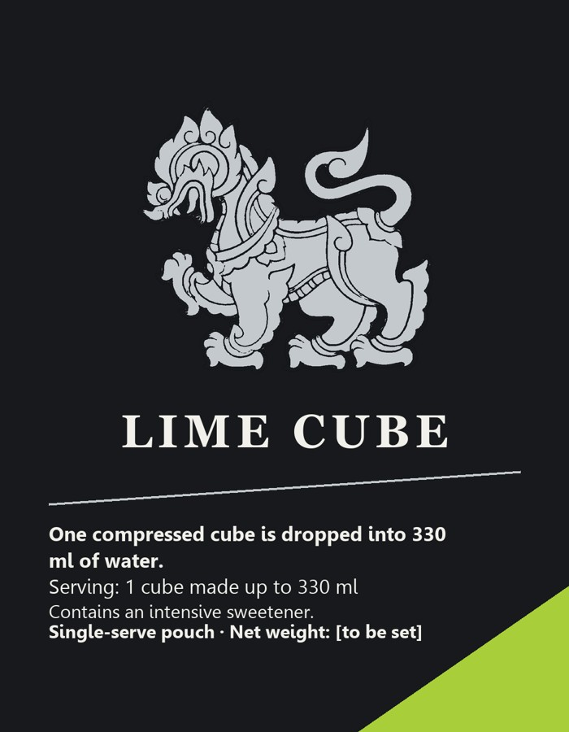
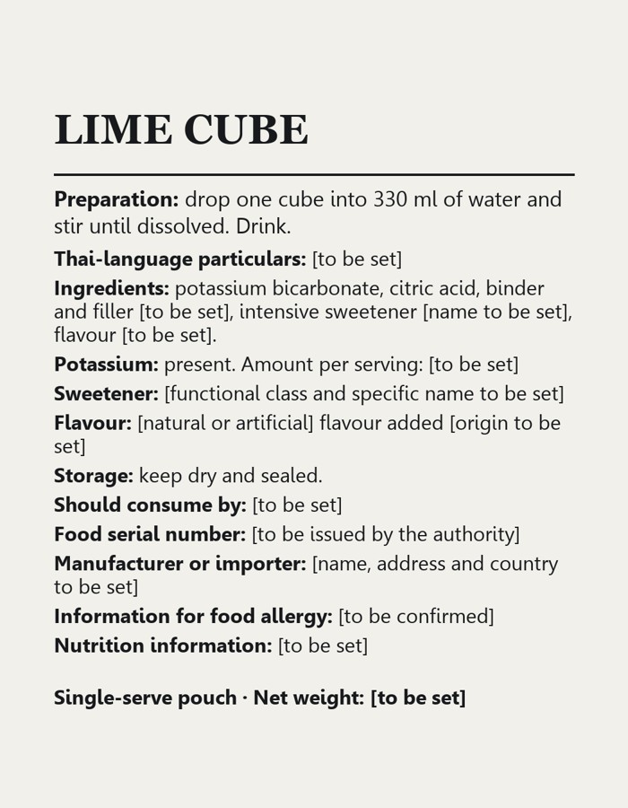

A dissolvable drink cube. One cube, dissolved in one 330 mL serve, makes a carbonated lime drink.
Lime Cube is a single-serve, dissolvable drink cube for domestic Thailand. The cube is pressed from potassium bicarbonate, citric acid, an intensive sweetener and a lime flavour. When it dissolves in water, the acid and the bicarbonate release carbon dioxide. The drink is carbonated, and the form is new: the consumer makes the drink in the glass.
The label copy is set in the artwork. One cube per pouch is inferred, not yet confirmed.
The company already sells a lime sparkling water: Singha Sparkling Water, Lime Flavour, in a 330 mL can at 15 baht (company release, 13 March 2026, P; news reprint, S). The two overlap on flavour. They differ in form and pack: Lime Cube dissolves in the glass, from a pouch; the company product is ready to drink from a can.


Front and back artwork. Thai particulars, manufacturer, sweetener name, binder name and net weight are placeholders.
The proposal makes no sugar-free, sodium-free, low-potassium, health, hydration, electrolyte, calorie or fizz-performance claim. Those wordings are held back until a Thai text check, a shelf test, a sensory test and a medical review are done. The competitor describes its can as sugar-free with 0% calories; that is its own claim and is not checked here.
| Component | Amount per serve | Basis and status |
|---|---|---|
| Carbon dioxide | 0.55 volume, 8.1 mmol | 0.55 times 0.330 L at standard molar volume. Recommended dose (decision, 19 October 2026). DERIVED. |
| Potassium bicarbonate | 0.811 g | One mole per mole of CO₂. DERIVED. |
| Citric acid, neutralising part | 0.519 g | One third mole per mole of CO₂. DERIVED. |
| Citric acid, total for pH 3.5 | 2.10 g | Working anchor pH 3.5, untested by taste. Acid constants: secondary source, UNVERIFIED in the handover. DERIVED. |
| Sucralose | 33 mg | 100 mg/kg. Permitted at 300 mg/kg in category 14.1.4, condition 127, for the drink as consumed (primary, flavoured-drink rows). Classification open. DERIVED. |
| Binder and filler | 0.80 g (0.5 to 1.2) | ASSUMPTION. Not yet named. Sodium content not checked, so no sodium claim is made. |
| Natural lime flavour powder | 0.05 g (0.02 to 0.10) | ASSUMPTION. |
| Potassium | 317 mg | about 9% of a Thai reference of 3,500 mg (secondary copies; primary not opened). DERIVED. The label amount line stays [to be set] pending the decision on the potassium line. |
| Reactants (before binder and flavour) | 2.944 g | DERIVED. |
| Item | Value | Basis and status |
|---|---|---|
| Side | 14 mm | Design side, chosen so the density sits inside the assumed band. DERIVED on ASSUMPTION inputs. |
| Mass, central (range) | 3.79 g (3.46 to 4.24) | Reactants plus binder and flavour. Not weighed. DERIVED on ASSUMPTIONS. |
| Density at 14 mm | 1.38 g/cm³ | Inside the assumed band of 1.25 to 1.60 g/cm³. ASSUMPTION band. |
| Packed unit | 5.29 g | Cube plus a 1.5 g pouch. ASSUMPTION for the pouch. |
| Net weight on the label | [to be set] | Not printed until a cube is weighed. |
Solubility of CO₂ at 35 °C is 0.592 volume, the lowest across the 5 to 35 °C serve range, so 0.55 volume is within solubility at every modelled serve (secondary, Lange-attributed, SOURCED). At 25 °C the model keeps about 0.50 volume after 10 minutes. Above a mineral-water threshold of about 0.22 volume (a proxy for a soft drink, abstract only) the upper bound is about 96 minutes. The model assumes no bubble formation. Ice lowers the start level: 30 g of ice gives about 21 °C at 0.50 volume. These are model results, not measurements; the retention gate is for R&D to define.
Single-serve flat pouch, 70 × 90 mm front, 20 mm deep. Printed laminate of food-contact PET with an antimony-free catalyst, and a foil barrier layer in the render. The sealant and barrier specification are not yet sourced. ASSUMPTION for size.
Six pouches (six cubes) in a printed folding paperboard carton, 190 × 150 × 50 mm outside. The board is not a food-contact surface, since the pouch is the food contact. The size is an ASSUMPTION; the board grade, print and price need a carton maker's quote, which has not been requested. The larger 12-cube carton is the alternative.
A 20 ft container holds about 128,586 cubes in 21,431 six-cube cartons. Volume, not weight, is the limit. The modelled load is 2.82 tonnes against a 28.2 tonne payload. The 12-cube carton gives 128,580 cubes in 10,715 cartons, a load of 1.75 tonnes.
| Line | THB |
|---|---|
| Reactants | 0.12 |
| Pouch (ASSUMPTION; non-Thai listing as proxy) | 1.30 |
| Print (ASSUMPTION) | 1.50 |
| Processing (ASSUMPTION) | 0.50 |
| Carton share, THB 4.00 per 6 (ASSUMPTION) | 0.67 |
| Cost per cube | 4.09 |
| Ex-factory planning value (ASSUMPTION: 60% of a THB 15 shelf price) | 9.00 |
| Contribution per cube (54.6% margin) | 4.91 |
Binder and flavour are not priced, so these figures exclude them. The 12-cube carton gives THB 3.84 per cube and contribution THB 5.16; the 12-cube carton share rests on a retail listing (PROXY).
Base case: 200,000 cubes a year at steady state, a launch year at half volume, five years, no terminal value, 10% discount rate. Volumes and fixed costs are assumptions, not forecasts.
| Annual fixed cost | NPV at 10%, base volume |
|---|---|
| THB 250,000 a year | THB 2.08 million |
| THB 500,000 a year | THB 0.88 million |
| THB 1,000,000 a year | -THB 1.51 million |
At THB 500,000 a year the undiscounted payback is about 2.1 years. The break-even fixed cost at base volume is about THB 683,852 a year. At 50,000 cubes a year the NPV is -THB 1.58 million at THB 500,000 fixed cost; at 1,000,000 cubes a year it is THB 13.99 million. Figures are DERIVED on ASSUMPTION volumes and costs.
The registry trademark search is partial. Brand-owner and legal sign-off on the lion emblem sit with the brand owner's department. The Thai patent register is unsearched. Novelty and freedom to operate are not assessed. Overseas cube products are analogues only (proxy).